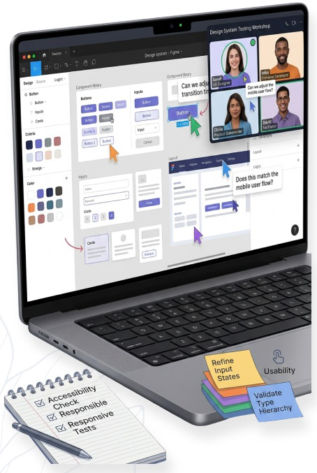
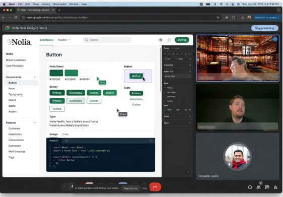
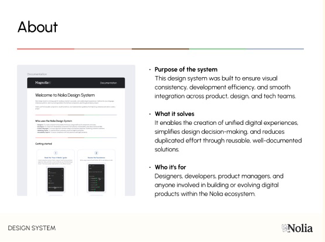
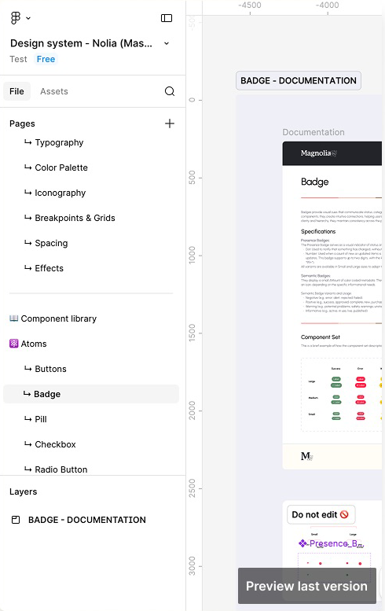

Nolia, a caregiver-focused startup preparing to scale and attract investment, had incomplete foundations and inconsistent products. In one month we delivered one design system: brand, tokens, 27 documented components, and a governance model the team could adopt.
From kickoff to launch
Documented components
Workshop rounds
Team members in testing, all aligned
Early design system efforts were incomplete, so landing pages and mobile apps drifted apart in look, behavior, and code.
Five planned stages: foundations, style guide, component library, testing, and launch & training.
A single source of truth that improved consistency, design–dev collaboration, and delivery speed.
- System: duplicate components with slight variations, plus visual and interaction inconsistencies.
- Workflow: inefficient dev cycles and an unclear design-to-development handoff.
- Team: misalignment led developers to solve things on their own, hurting quality and brand perception.
- Constraint: everything had to be defined and delivered within one month, with limited resources.
Foundations
GoalWith little time and few resources, set clear structures, align stakeholders, and create a workflow ready for design and development from day one.
- Aligned priorities, constraints, and expectations with stakeholders and two developers in working sessions.
- Audited the landing pages and mobile apps to find inconsistencies, duplicated components, and gaps.
- Benchmarked existing libraries, not to adopt them, but to map component properties and define a custom approach.
- Planned weekly deliveries covering design, dev handoff, demos, and documentation, prioritized by stakeholder input.
Style guide
GoalTranslate the brand into one visual and communicative system: voice, assets, typography, and tokens.
- Defined the voice: empathetic, clear, and trustworthy, for caregivers dealing with ongoing health challenges.
- Refined brand assets through the move from Magnolia to Nolia Health, with logo variations and Fluent as the icon base.
- Secured imagery with a curated library and a Getty Images license for compliant use.
- Chose Urbanist for its clean, rounded geometry: legible at any size, warm in tone.
- Standardized effects: overlay opacity levels for focus and shadow levels for hierarchy and depth.
Component library
GoalTurn the style guide into reusable components, delivering the most critical ones first within the timeline.
- Evaluated each component for need, usage frequency, and cross-product use before any design work.
- Balanced effort and complexity: quick wins first, higher-effort components for later stages.
- Ran parallel workstreams so design and development could move at the same time.
- Built in accessibility: WCAG 2.1 AA, keyboard and screen reader support, contrast per theme and mode, annotations in each doc.
Testing
GoalMake sure components were not only consistent, but also usable and technically feasible, before the final rollout.
Despite the small sample, results were consistent: every team member in the workshops showed alignment and overall satisfaction with the system. The words they used most: structured and predictable.
- Remote workshops simulating real use, with a stakeholder, a developer, and a product designer.
- Live component testing to observe behavior, usability, and interaction patterns in real time.
- Technical validation by developers to flag implementation issues early.
- Accessibility checks on readability, contrast, and interaction clarity.
The components feel consistent and easy to reuse across different scenarios, and it significantly reduces the ambiguity we previously had.
Alice B. · Stakeholder
I really like how tokens are already integrated into the components, because it makes the transition from design to code much more straightforward.
Mario V. · Frontend Developer
Launch & training
GoalNot only deliver the system, but make sure teams actually adopt it.
- Component refinement on edge cases, interaction states, and responsiveness.
- Documentation alignment to simplify guidelines for designers and developers.
- Cross-functional reviews with stakeholders and developers on usability and feasibility.
Measuring what changed
GoalTrack adoption, efficiency, and overall impact of the system with defined KPIs.
Component detach rate
How often components are detached, pointing to usability or flexibility issues.
Component usage rate
How often components are reused across products, reflecting adoption.
Delivery time reduction
Design and development speed gains after the system went live.
Early alignmentReduces rework and misalignment.
Start simpleCore components first, then scale.
DocumentationDrives adoption as much as components.
Design–devConstant collaboration cuts friction.
FlexibilityAdapt without losing consistency.
Real testingReveals gaps design alone hides.
Time limitsForce high-impact decisions.
GovernanceWithout owners, systems degrade.



